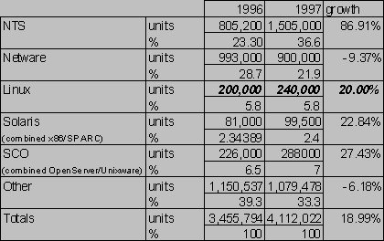
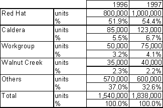
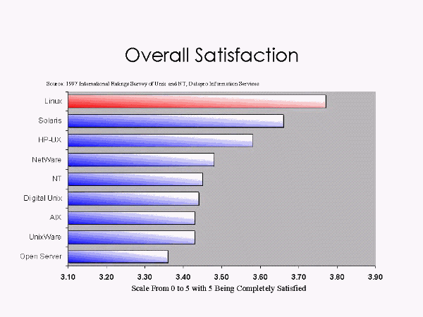
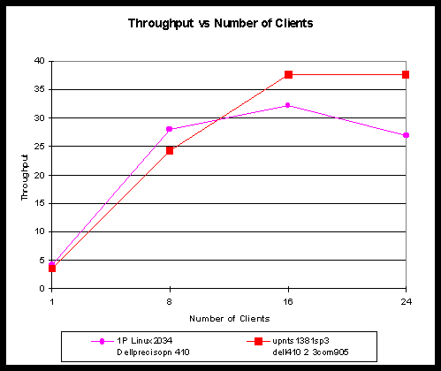

Linux OS Competitive Analysis
The Next Java VM?
{ This memorandum was clearly written as the followup to the one on Open Source which I have previously annotated as the `Halloween Document' (now Halloween I; you should browse it first). Halloween II was leaked to me by a former Microsoft employee 3 Nov 1998, three days after I published Halloween I, apparently as a direct result of the national press coverage that received.
It tells us much less about Microsoft's intentions and strategy than Halloween I. On the other hand, it is more directly useful to operating-system customers trying to evaluate Microsoft's credibility vis-a-vis that of Linux vendors.
In this context, the author's extremely positive evaluation of Linux's market share, performance, reliability, and viability in the server role is very interesting -- and completely the opposite of Microsoft's dismissive public statements to date.
Actually, readers would do well to bear in mind that many of the positive statements in here are short of the truth; they reflect not so much reality as the limits of what a Microsoft employee can admit to, even internally.
Key Quotes:
Here are some notable quotes from the document, with hotlinks to where they are embedded. It's helpful to know that ``OSS'' is the author's abbreviation for ``Open Source Software''.
* Linux represents a best-of-breed UNIX, that is trusted in mission critical applications, and - due to it's open source code - has a long term credibility which exceeds many other competitive OS's.
* Most of the primary apps that people require when they move to Linux are already available for free. This includes web servers, POP clients, mail servers, text editors, etc
* An advanced Win32 GUI user would have a short learning cycle to become productive [under Linux].
* I previously had IE4/NT4 on the same box and by comparison the combination of Linux / Navigator ran at least 30-40% faster when rendering simple HTML + graphics.
* Long term, my simple experiments do indicate that Linux has a chance at the desktop market ...
* Consumers Love It.
* Linux's (real and perceived) virtues over Windows NT include: Customization ... Availability/Reliability ... Scaleability/Performance ... Interoperability ...
* Linux is emerging as a key operating system in the nascent thin server market
* Using today's server requirements, Linux is a credible alternative to commercial developed servers in many, high volume applications.
* The effect of patents and copyright in combatting Linux remains to be investigated.In compiling these quotes, I have ignored material that essentially duplicates that found in the Halloween I.
How To Read This Document:
Comments in green, surrounded by curly brackets, are me (Eric S. Raymond). I have highlighted what I believe to be key points in the original text by turning them red. I have inserted comments near these key points; you can skim the document by surfing through this comment index in sequence.
Threat Assessment:
This memorandum reiterates the sinister suggestion that Linux can be stopped if standard protocols are ``de-commoditized'' -- that is, perverted with incompatible extensions, then used to lock in customers. This threat is extensively discussed in my annotations for Halloween I
This memorandum also suggests that Linux could be attacked through patent lawsuits.
History:
1.1 -- Initial version, prepared 3-4 Nov 1998.
}
Vinod Valloppillil (VinodV)
Josh Cohen (JoshCo)
Aug 11, 1998 - v1.00
Microsoft Confidential
Table of Contents
*Executive Summary
*Linux History
*What is it?
*History
*Organization
*Linux Technical Analysis & OS Structure
*Anatomy of a Distribution
*Kernel - GPL
*System Libraries & Apps - GNU GPL
*Development Tools (GPL)
*GUI / UI
*Commercial Linux OS
*Binary Compatibility
*RedHat
*Caldera
*Others
*Commercial Linux ISV's
*Market Share
*Installed Base
*Server
*Client
*Distributor Market Share
*Linux Qualitative Assessment
*Installation
*UI
*Networking
*Apps
*Perceived Performance
*Conclusions
*Linux Competitive Issues
*Consumers Love It.
*Linux vs. NT
*Linux vs. Java
*Linux vs. SunOS/Solaris
*Linux on the Server
*Network infrastructure
*ISP Adoption
*Thin Servers
*Case Study: Cisco Systems, Inc.
*Linux on the Client
*App / GUI Chaos
*Unix Developers
*Non-PC Devices
*Linux Forecasts & Futures
*Current Initiatives / Linux Futures
*"Parity Growth"
*Strengths
*Weaknesses
*Worst case scenarios
*Next Steps & Microsoft Response
*Beating Linux
*Process Vulnerabilities
*Revision History
*
Linux Operating System
The Next Java VM?
The Linux OS is the highest visibility product of the Open Source Software (OSS) process. Linux represents a best-of-breed UNIX, that is trusted in mission critical applications, and - due to it's open source code - has a long term credibility which exceeds many other competitive OS's.
Linux poses a significant near-term revenue threat to Windows NT Server in the commodity file, print and network services businesses. Linux's emphasis on serving the hacker and UNIX community alleviates the near-medium term potential for damage to the Windows client desktop.
In the worst case, Linux provides a mechanism for server OEMs to provide integrated, task-specific products and completely bypassing Microsoft revenues in this space.
[This document assumes that the reader has read the "Open Source Software" doc first. Many of the ideas / assertions here are derived from the previous doc and many other applicable Open Source arguments are not repeated here for brevity.]
Linux (pronounced "LYNN-ucks") is the #1 market share Open Source OS on the Internet. Linux derives strongly from the 25+ years of lessons from the UNIX operating system.
Top-Level Features:
An excellent piece on the history of the Linux Operation system is provided by Wired Magazine at
http://www.wired.com/wired/5.08/linux.html. I've paraphrased some of the key points below.Linux was original the brainchild of Linus Torvalds, an undergraduate student at the University of Helsinki. In addition to a 80386-based kernel, Linus wrote keyboard and screen drivers to attach to PC hardware and provided this code under GNU's Public License on an FTP site in the summer of 1991.
After hosting his work on the FTP site, he announced it's availability on a Minix USENET discussion group in late summer 1991. By January of 1992, over 100 users / hackers had downloaded Linux and - more importantly - were regularly contributing / updating the source code with new fixes, device drivers, etc.
In contrast to the FSF/GNU work, which provided developers an open source abstraction above the underlying, commercial UNIX OS kernel, Linux's team was creating a completely open source kernel. In time, more and more of the GNU user/shell work was ported to Linux to round out the platform for hackers.
Forbes magazine's story on Linux has some excellent data on Linux's development history http://www.forbes.com/forbes/98/0810/6209094s1.htm:
|
Date |
Users |
Version |
Size (LOC) |
|
1991 |
1 |
0.01 |
10k |
|
1992 |
1000 |
0.96 |
40k |
|
1993 |
20,000 |
0.99 |
100k |
|
1994 |
100,000 |
1.0 |
170k |
|
1995 |
500,000 |
1.2 |
250k |
|
1996 |
1.5M |
2.0 |
400k |
|
1997 |
3.5M |
2.1 |
800k |
|
1998 |
7.5M |
2.1.110 |
1.5M |
The LOC count appears to be inclusive of all Linux ports including x86, PPC, SPARC, etc.
Linux 1.0 - March 1994
Linux 1.0 was the first major release and led to the creation of "distributions." Prior to 1.0, linux existed as a piecemeal kernel with no centralized place to get a full working OS.
Major Features:
Management Structure
After the release of version 1.0. The Linux developer community adopted a management structure to control what is added to the kernel with even numbered releases as stable, production release branches and odd numbered versions were "developer" branches.
While major areas of the kernel have "owners" which maintain their areas, Linus remains the final say on what does and does not go into the kernel. In large part, this structure remains in place.
It is important to distinguish that this management structure only controls the actual kernel and does not include supporting areas like the GUI, system utilities and servers, and system libraries.
Since 1.0, the following 1.x branches existed:
1.1 3/95
1.2 8/95
1.3 6/96
Version 1.3 evolved to become version 2.0
Linux 2.0 - June 1996
Linux v2.0 was the first major release could effectively compete as a UNIX distribution. The kernel, system libraries, the GNU Unix tool, X11, various open source server applications such as BIND and sendmail, etc. were frozen and declared part of Linux 2.0.
Around the same time the GNU/FSF agreed, reluctantly, to make the Linux kernel the official kernel of the GNU operating system.
Some of the new base libraries and tools:
Subsequent Versions
The current 2.0.x stable version is 2.0.34, which was released in May 1998. Prior to this, 2.0.33 was released in Dec 1997. The current development branch is 2.1.108 (as of July 14, 1998).
Process Slowdown
With the growth of the kernel, Linux's release frequency has slowed measurably. There is growing frustration about when 2.2, the next "stable release" version will ship. The sheer size of the codebase has begun to overrun the resources of Linus. There is a backlog of patches to be merged and often, Linus is becoming the choke point.
The current release tree, 2.0.x has iterated 34 versions in 2 years. The development branch, 2.1.x, which will eventually become 2.2 has been going on since 9/96 spanning 108 versions and no ship date in sight.
Even though the feature freeze is declared, major changes continue to get integrated into the kernel. Most merges seem to be due to fundamental bug fixes and or cross platform issues.
An analysis / description of the OSS development organization and process is in a second memo titled "Open Source Software." This section describes attributes of OSS that are unique to Linux.
Wired Magazine ran a recent story chronicling the history of Linux "The Greatest OS that (N)ever was"
http://www.wired.com/wired/5.08/linux.html.The growth of the development team mirrored the organic, not to say chaotic, development of Linux itself. Linus began choosing and relying on what early Linux hacker Michael K. Johnson calls "a few trusted lieutenants, from whom he will take larger patches and trust those patches. The lieuts more or less own relatively large pieces of the kernel."
As with other OSS projects, the General Public License ("CopyLeft") and it's relatives are considered instrumental towards creating the dynamic behavior around the Linux codebase:
In a sense, GPL provided a written constitution for the new online tribe of Linux hackers. The license said it was OK to build on, or incorporate wholesale, other people's code - just as Linux did - and even to make money doing so (hackers have to eat, after all). But you couldn't transgress the hacker's fundamental law of software: source code must be freely available for further hacking
Linux Technical Analysis & OS Structure
"Linux" is technically just a kernel, not the entire supporting OS. In order to create a usable product, Linux "distributions" are created which bundle the kernel, drivers, apps and many other components necessary for the full UNIX/GUI experience.
These subsystems are typically developed in an OSS manner as well and several of them - e.g. the Xfree86 GUI - have a codebase size/complexity that exceeds the Linux kernel.
These external components come from many sources and are individually hand picked by the distribution vendor for a particular product. A frequent source of controversy stems from distribution vendors bundling non-GPL code with the Linux kernel and mass distributing them.
A partial list of components is in the following table:
|
Component |
Codebase / Name |
Provider/Maintainer(s) |
|
Kernel |
Basic OS, Networking Stack |
Linux (http://www.kernel.org) |
|
File System(s) |
Msdos, ext2fs |
Linux Kernel |
|
Sys Libs |
Glibc, Lib5c |
GNU / FSF |
|
Drivers |
Linux, Individual Contributors |
|
|
User Tools |
Gnu user tools |
GNU/FSF |
|
System Installation |
LISA |
Caldera |
|
App Install Management |
RedHat Package Manager |
RedHat |
|
Development Tools |
GNU Development tools GCC |
GNU/FSF |
|
Web Server |
APACHE |
The Apache Group http://www.apache.org/ |
|
Mail Server |
SendMail |
http://www.sendmail.org |
|
DNS Server |
BIND |
http://www.bind.org |
|
SMB Server |
SAMBA |
http://www.samba.org |
|
X Server |
Xffree86 / MetroX |
Xfree86 project / MetroX commercial |
|
Window Manager |
FVWM |
GPL |
|
Widgets |
Motif |
X Consortium |
|
Desktop Tools |
X Contrib KDE Gnome |
X Consortium http://www.kde.org http://www.gnome.org |
|
Management |
RPM Package Installed Roll own distribution specific |
RedHat (free) Debian / Slackware |
Descriptions of some of the larger components are below:
The kernel is the core part of Linux that is expressly managed by Linus and his lieutenants and is protected via the GPL.
Functions contained in the Linux Kernel include:
Extensive on-line documentation of the Linux kernel architecture and components can be found on:
Drivers -- GPL
An assortment of modules for standard functions and devices are typically part of the kernel distribution. In addition, a selection of non-standard modules is often included.
Mostly GPL, however in some cases, NDAs with hardware manufacturers are required to get specs to make a driver, in which case they are not open source.
Linux device drivers are typically developed by users for specific devices on their machines. This incremental, piecemeal process has created a very large pool of device drivers for Linux (as of 7/1/98):
NatBro points out:
An important attribute to note which has led to volume drivers is the ease with which you can write drivers for linux, and the relatively powerful debugging infrastructure that linux has. Finding and installing the DDK, and trying to hook up the kernel debugger and do any sort of interaction with user-mode without tearing the NT system to bits is much more challenging than writing the simple device-drivers for linux. Any idiot could write a driver in 2 days with a book like "Linux Device Drivers" -- there is no such thing as a 2-day device-driver for NT
Recently, a small number of hardware vendors have begun to provide Linux drivers for their NICs (3Com) and SCSI adapters (Adaptec). These drivers are believed to be protected by the Library-GPL and are consequently not open source (the Library-GPL is described later). It remains to be seen whether this will create the momentum to develop more commercial drivers for Linux.
System Libraries & Apps - GNU GPL
System libraries provide:
The system libraries in a Linux distribution are NOT managed by Linus. As such, there has been a small amount of versioning / forking in this area with two dominant libraries - glibc and lib5c which introduce minor incompatibilities between different apps.
User Tools (GPL, GNU FSF)
These are basic UNIX command line tools and shell environments. Many shell environments exist although all are supported by the FSF.
Also included in this category are "old standby" apps such as finger, telnet, etc.
A hallmark of the UNIX operating system is the free availability of development tools / compilers. The GCC and PERL language compilers are often provided for free with all versions of Linux and are available for other UNIXes as well.
These tools are the "old standbys" of the UNIX development world and are widely used across all Unix platforms. This mass commoditization of development/debug tools is a key contributor to the common skillset efficiencies realized by the Linux process.
By the standards of the novice / intermediate developer accustomed to VB/VS/VC/VJ, these tools are incredibly primitive.
X Server
The X Server standard is owned by MIT under contract by the X Consortium. X Consortium's licensing practices are viewed as too restrictive by the OSS crowd so a series of public X initiatives were launched with Xfree86 being the dominant distribution.
Interestingly, the Xfree86 development team licenses their code under the BSD license because they consider GPL too restrictive: http://www.redhat.com/linux-info/xfree86/developer.html.
Configuring the XFree86 system on Linux can be a very difficult, time consuming process. Linux has no hardware abstraction layer for video services, and most video card manufacturers do not provide Linux OS video drivers. Thus, XFree86 provides internal support for a wide variety of video cards and chipsets. Correctly configuring XFree86 requires the user to know the manufacturer, model, and chipset for their video card. In many cases, the user must know or calculate the video timings as well.
Widgets & Desktops
There are multiple widget sets which exist in many applications, so all X applications do not look the same or act the same ways like in Windows. Motif is considered the defacto Unix widget set, but since it is not freely distributable, it is contrary to the Linux model.
Consequently, Linux distributions usually choose one of several similar, but not completely compatible Widget sets.
Obviously, this mess has spawned several efforts to unify the "desktop" as well as the widget sets. In typical Linux fashion, there are several competing efforts:
Server
Almost all of the system components necessary to run server applications are part of the core distribution maintained by Linus. Consequently, for a given hardware type, almost all Linux server application binaries will natively run. Across hardware types (e.g. x86 vs. PPC), generally only a recompile of the application is necessary.
There is essentially 100% source code compatibility for system application code.
Solaris / SCO x86 Compatibility
Via compatibility libraries, Linux on x86 is able to natively execute most SCO UNIX and Solaris x86 binaries. Oracle on SCO is widely cited as an example (although Oracle does not "officially" support SCO binaries on top of Linux - also Oracle has recently announced development of a native Linux version of Oracle 8 to ship in March 1999)
Client
Client distributions, however, are a different story stemming most directly from the current "mess" in X-windows / GUI systems for Linux.
Binary compatibility issues generally stem from differences in non-kernel code that's required to turn the kernel into a full OS.
Binary Incompatibility: Netscape Communicator
One example of this incompatibility is Netscape Communicator for Linux. The released versions of Netscape Communicator for Linux are built based on libc5, instead of the newer glibc which Caldera supports. RedHat, however ships glibc instead of libc5 requiring users install libc5 as well as glibc.
http://www.redhat.com
RedHat Corporation was founded in 1995 by a pair of Linux developers/enthusiasts with the intent of creating a commercially supported, "cleaned-up" Linux distribution.
The company currently has ~35 employees. Financials and some run-rate information is available in an interview with their CEO in Infoworld (
http://www.infoworld.com/cgi-bin/displayArchive.pl?/98/23/e03-23.102.htm):
Bob Young, president of Red Hat expects the 3-year old company to earn revenues of $10 million this year and to ship about 400,000 copies of Linux, ranging from $50 to near $1,000 for a supported version.
Commercially-Developed Extensions
Perhaps the most interesting aspect of Red Hat's business model is their extremely active and continuing contributions to the Linux community. Several prior initiatives spearheaded by RedHat have been released as OSS for modification. In most cases, these code releases were simple fixes or additional drivers.
Redhat actively employs several key Linux developers and pays them to hack Linux fulltime. Some of the components which have been "donated" back to the Linux effort include:
One of the larger "grants" however has been the now universal "Redhat Package Manager" or RPM which ships with almost all Linux distributions. RPM creates the concept of an application manifest which simplifies the job of installing & removing applications on top of Linux.
Redhat's current development project is a new GUI for Linux call "Gnome". Gnome is a response to latent concerns with non-GPL versions of the X-windows user interface.
Product Features
Of the Commercial Linux Distributors, Redhat has the largest array of SKU's. At the highest end, Redhat bundles the following with their distributions of Linux:
Caldera is Ray Noorda's latest company with its eye on the operating system marketplace. Caldera's financials and sales are unpublished but it is widely believed to be the #2 commercial Linux vendor after RedHat.
Caldera bundles several components with their version of Linux including:
Other Linux distributions seem to be falling by the wayside of RedHat and Caldera. They include SlackWare, SuSe, and Debian to name a few. A comprehensive list of distributions can be found on http://www.linux.org.
There are currently no major ISV's who derive a significant percentage of their sales from the Linux platform. A somewhat complete list of the commercial apps available on Linux can be found on: http://www.uk.linux.org/LxCommercial.html.
Reasons for this include:
Library-GPL
Unlike the GPL (General Public License - described in depth in "Open Source Software") which forces all derivative works to be free, Linux software libraries have the more limited "Library GPL" which allows applications which merely link to Linux to be considered non-derivative.
The Library-GPL removes a key impediment to commercial software vendors developing products on top of Linux.
The Library-GPL is defined at http
://www.fsf.org/copyleft/lgpl.htmlBinary Unix Compatibility
Linux adheres to several UNIX standards most notably POSIX 1003.1c. When compiled and running on it's various CPU platforms, Linux is generally binary compatible (more so on the server than on the desktop) with the primary commercial UNIXs including:
Microsoft
Microsoft's current involvement in Linux is limited to distribution of client code for strategic services such as Netshow as well as helping SAG port DCOM to Linux. IE is currently not officially supported on Linux.
Intel
Intel is directly involved in helping port Linux to Merced. Intel is also involved with the GCC over Merced development efforts.
Netscape
In the press, Netscape is sited as the #1 commercial provider of software for Linux. Marc Andreeson has been extensively quoted as saying that "Linux is a tier 1 platform for Netscape".
Until recently, however, the only server product that Netscape explicitly sells for Linux is their Fasttrack server with other servers merely being licensed to the respective Linux vendors for their own redistribution. On July 21st, however, Netscape formally announced intentions to port all of their server application products to Linux starting with Mail and Directory services.
All of Netscape's client products are available on the Linux platform.
Oracle
Oracle recently announced (7/18/98) their support for Oracle 8 on top of Linux to be shipped in March 1999.
{ Oracle 8i for Linux has been shipped. In fact, Oracle is giving away copies free for personal use. }Sun
Sun's involvement in Linux is inconclusive. Early this year (1998), Sun joined the board of Linux International which is one of many user groups representing Linux.
At one level, Linux competes (quite favorably) against Sun's own Solaris x86 port.
At a secondary level, Sun may view Linux as a strategic ally b/c it generally represents the low-end of the software market and could therefore arguably hurt Microsoft more than it hurts Sun.
SoftwareAG
SoftwareAG has ported it's ADABAS database server to Linux and is currently bundled with Caldera's distribution.
Corel
Corel has ported their WordPerfect Suit to Linux and is currently offering it bundled with several of RedHat's SKU's
Computer Associates
Recently announced intentions to port CA-Ingres DB to Linux: http://x10.dejanews.com/getdoc.xp?AN=370037691&CONTEXT=900053229.949289093&hitnum=0.
Linux's exact market share is very difficult to calculate because:
Below I include data / pointers from some of the more prominent attempts to isolate the number of Linux users.
The most comprehensive Linux market share survey was published by Red Hat in March 1998:
http://www.redhat.com/redhat/linuxmarket.htmlUsing available data collected from other distributions, RedHat calculated a retail CD sell rate of :
RedHat's estimate of the growth of the Linux installed user base (which includes CD purchases as well as downloads as well as clent + server) is:
Other estimates put the Linux installed base from 5 Million (Ziff Davis), to 10 Million (Linux advocates).
IDC's most recent "Server Operating Environments" report provides the following breakdown of shipments in the Server OS space.
Using the 240K number shipped in 1997, IDC seems to be estimating ~750K total installed Linux server systems. Compared to other market share studies, IDC's may be underestimating the actual new Linux server installations - I believe IDC may be counting only top distributions in their survey.
Starting with Dataquest's market share figures published in June '98, I injected the incremental Linux numbers derived from RedHat's market survey (showing 7.5M users at the end of 1997).
IDC provides information on the relative market share of the Linux distributors:
I purchased and installed a copy of Caldera's OpenLinux v1.2 standard edition. I installed it on an old P5-100 / 32MB RAM machine in my office that used to run NT4. Knowing that device driver support on Linux was well below NT's, I intentionally chose a machine and peripherals that represented the 80% of the installed base (e.g. 3c509 NIC, Adaptec SCSI controller, etc.)
Caldera provided an auto-run CD which launched directly into their setup program - "LISA". Lisa prompted me for:
Although the dialogs could use a lot of work (e.g. many questions were phrased as double-negatives - "Should setup disable plug & play device detection (yes/no)"), up to this point I was asked no questions that a power user couldn't correctly answer.
A second round of device detection impressively auto-discovered my:
I selected default device settings for each hardware option, selected "typical" install options and then LISA started copying.
This phase of the install/setup process was finished in 30 minutes (most of that time copying) and with a total of ~15 dialog boxes.
As mentioned earlier, one of the quirks of UNIX / Linux relative to NT is that video drivers run in userspace and are not required for most system functionality. Linux is quite content with just a command prompt.
A second round of installation scripts was necessary to install the GUI. The installer gave me the option of choosing which video subsystem to install / configure and I chose the Xfree86 server because it's an entirely open source system (the other option - MetroX - was provided by Caldera and is believed to be the more stable codebase).
This part of setup definitely required knowledge of video systems even beyond many power users. Not only did I have to know the name / make / model of my video card and chipsets but I was presented with questions about their revision numbers, the scan rates of my monitors, etc. After significant trial and error, I finally got my video system working correctly.
The latest generation Xfree86 + CDE was slick and definitely represented among the best-of-breed in UNIX GUI's. A SUN desktop user would be perfectly at home here. An advanced Win32 GUI user would have a short learning cycle to become productive.
Following UNIX philosophy, however, mastery of the GUI was not enough to use the full system. Simple procedures such as reading a file from a floppy disk required jumping into a terminal window, logging in as administrator, and running an arcane "mount" command.
A very illustrative case of how the Linux user community works was revealed by my experiences with the networking subsystem.
Caldera's OpenLinux installer only provided the client daemon to handle the BootP protocol (as opposed to DHCP) and for some reasons, it didn't install correctly. I looked around on the CD that Caldera provided for a DHCP daemon and couldn't find one.
A small number of web sites and FAQs later, I found an FTP site with a Linux DHCP client. The DHCP client was developed by an engineer employed by Fore Systems (as evidenced by his email address; I believe, however, that it was developed in his own free time). A second set of documentation/manuals was written for the DHCP client by a hacker in Hungary which provided relatively simple instructions on how to install/load the client.
I downloaded & uncompressed the client and typed two simple commands:
Make - compiles the client binaries
Make Install -installed the binaries as a Linux Daemon
Typing "DHCPCD" (for DHCP Client Daemon) on the command line triggered the DHCP discovery process and voila, I had IP networking running.
DHCP as an example of Linux process
Since I had just downloaded the DHCP client code, on am impulse I played around a bit. Although the client wasn't as extensible as the DHCP client we are shipping in NT5 (for example, it won't query for arbitrary options & store results), it was obvious how I could write the additional code to implement this functionality. The full client consisted of about 2600 lines of code.
One example of esoteric, extended functionality that was clearly patched in by a third party was a set of routines to that would pad the DHCP request with host-speciifc strings required by Cable Modem / ADSL sites.
A few other steps were required to configure the DHCP client to auto-start and auto-configure my Ethernet interface on boot but these were documented in the client code and in the DHCP documentation from the Hungarian developer.
Key takeaways here:
Additionally, due directly to GPL + having the full development environment in front of me, I was in a position where I could write up my changes and email them out within a couple of hours (in contrast to how things like this would get done in NT). Engaging in that process would have prepared me for a larger, more ambitious Linux project in the future.
Caldera bundled StarOffice from Star Corp in Germany. The Office team is quite familiar with StarOffice as a "second-string" contender in the suite category after Corel (which is bundled with Red Hat) and Lotus.
StarOffice was almost entirely an Office 97 clone from a UI perspective. The menus, buttons, placement, etc. were all generally identical. In many cases, large areas of functionality in the menu bar were missing (e.g. Macros). Other stereotypical Office97 features (e.g. red squiggles under misspelled words) were correctly replicated.
As a test, I tried importing a somewhat simple PowerPoint document into StarOffice from a floppy disk. This required jumping into an x-terminal and mounting a new floppy disk into the Linux file system namespace and pointing out to Linux that it was FAT16 formatted. From there, I launched StarOffice's PowerPoint clone and pointed it at the namespace for the floppy and uploaded the file.
Simple slides (such as pure text + bullet points) imported nearly 100% correctly (although fonts and sizing were changed). Complex sides (using PowerPoint's line art, etc.) were almost always totally trashed.
Caldera also bundles Netscape's Navigator browser. The browsers UI, of course, perfectly matches Netscape's UI on win32 platforms.
I didn't have the time to run true performance tests, but my anecdotal / percieved performance was impressive. I previously had IE4/NT4 on the same box and by comparison the combination of Linux / Navigator ran at least 30-40% faster when rendering simple HTML + graphics.
Testing end user applications on top of Linux will be an interesting performance test in the future.
On a negative note, after I had instantiated 3 instances of Navigator on the box, performance came to an almost complete standstill, the mouse become unresponsive, none of the keyboard command sequences worked and I had to reboot the box.
Skilled users with modest developer backgrounds are probably delighted to use Linux due to the endless customizability afforded by Open Source. The simplicity and consistency of the process to modify the system presents a very low learning curve towards "joining" the Linux process.
Long term, my simple experiments do indicate that Linux has a chance at the desktop market but only after massive investments in ease of use and configuration. The average desktop user is unfamiliar with "make".
A December 1997 survey of Fortune 1000 IT shops by Datapro asked IT managers to rate their server OS's on the basis of: TCO, Interoperability, Price, Manageability, Flexibility, Availability, Java Support, Functionality, and Performance. RedHat provides summary info at: http://www.redhat.com/redhat/datapro.html.
When overall satisfaction with the OS's was calculated, Linux came out in first place. Linux was rated #1 in 7 of 9 categories in the DataPro study losing only on: functionality breadth, and performance (where it placed #2 after DEC)
Windows NT is target #1 for the Linux community. To characterize their animosity towards NT (or, for that matter, anything Microsoft) as religious would be an understatement. Linux's (real and perceived) virtues over Windows NT include:
The threat here is even more pronounced as over time, the number of servers (and consequently dedication to specific tasks) will increase. Customers enjoy the simpler debugging and fault isolation of individual servers vs a monolithic server runing multiple services.
Recently, the NT performance team ran their NetBench file/print test against a recent Linux distribution. Results indicate that although NT slightly outperforms Linux, Linux's performance is still quite acceptable and competitive considering the years of tuning that has been applied to the NT SMB stack.

Linux developers are generally wary of Sun's Java. Most of the skepticism towards Java stems directly from Sun's tight control over the language - and lack of OSS.
The Linux community has been asking Sun to treat the Linux platform as a tier-1 Java platform almost since the dawn of the language. However, Sun does NOT support the JDK for Linux.
Interestingly, in order to develop the Linux JDK, several Linux developers signed NDA's to develop the port (
http://www.blackdown.org). These pressures have also spawned several OSS JVM clones including http://www.kaffe.org.Linus comments in (
http://www.linuxresources.com/news/linux-expo.html)While Linus would like to see an officially supported Java Development Kit from Sun, he is still not impressed with Java and would prefer to stay out of the Microsoft/Sun clash over Java purity;
The Linux community has ambivalent feelings towards Sun. On the one hand, as the most vocal critic of Microsoft, Sun is praised. On the other hand, as the most visible yardstick in the UNIX world, beating Solaris / SunOs is a favorite past-time of Linux hackers.
Using the Lmbench OS benchmark, Linux outperforms SunOS not only on x86 but, impressively, on Sun Hardware as well in networking, process / context switch times, disk I/O, etc.
Some (not very scientific or comprehensive) OS performance statistics can be found on: http://www.caip.rutgers.edu/~davem/scoreboard.html.
In generating these performance results, the great number of eyes (and consequently large amount of hand tuning / optimizing of critical code paths) is most frequently cited.
A general architectural comparison citing the performance benefits of Linux over SunOS can be found on:
http://www.nuclecu.unam.mx/~miguel/uselinux/SparcLinux.htmlSun has recently announced (8/10) the free licensing of Solaris binaries for non-commercial institutions (http://www.sun.com/edu/solaris/index.html). Presumably this is due to competitive pressures from Linux.
The vast majority of Linux's installed, production base is projected to be in servers.
Reasons why Linux is strong in this market include:
Linux is often used to provide commodity, low horsepower, high reliability network infrastructure services. For example:
One of Linux's core user bases is ISP shops. Some of the reasons for this include:
Linux is emerging as a key operating system in the nascent thin server market:
One of the most prominent thin-server on the market based on Linux today is the Cobalt Microserver (http://www.cobaltmicro.com). Other thin server vendors (most notably Whistle Interjet) are using FreeBSD derived products.
Case Study: Cisco Systems, Inc.
IDC published a study of 3 corporate IS departments which had significantly deployed Linux. Cisco has several hundred Linux servers deployed through their organization serving the following functions:
Due to it's UNIX heritage and Hacker OS background, Linux is a weak client-desktop OS. Additionally, the OSS paper points out why, in a broad sense, OSS is much more of a server threat than a desktop threat.
There are, however, several initiatives attempting to push Linux as a viable desktop replacement. Each of the various Desktop environments (GNOME, KDE, CDE) come bundled with basic productivity applications and there are 2 full fledged office suite products (from Corel and StarOffice) which provide varying degrees of file format compatibility with Microsoft Office.
Unlike the Kernel - where Linus Torvalds maintains the core source tree, the Linux GUI has NOT been singularly managed and consequently has a highly forked tree.
Linux does not have a consistent UI look and feel due to the variety of widget sets (a widget is analogous to an OCX or VBX) such as Motif, LessTiff, MIT Athena, Sun OpenLook, etc. Because widgets represent central UI concepts (such as a close button, dropdown menu, dialog box, etc.), users get different look-and-feels and often different usage semantics.
In addition to Widgets, the "desktop" or "shell" has also forked. Primary players in the shell arena include:
The lack of singular, customer-focused management has resulted in the unwillingness to compromise between the different initiatives and is evident of the management costs in the Linux process.
Linux as a client has found a home with UNIX developers. Many developers prefer to use Linux for their dev machines in order to write code for other UNIX platforms. The ease of debugging on top of a platform where there is open source is often cited.
Corel's NC devices were based on a Linux derived OS. These efforts, however, have since been suspended (with the Corel developed application-level code being returned to the OSS community)
Current Initiatives / Linux Futures
There are literally hundreds of small research projects attempting to improve various parts of the Linux OS.
Some projects include:
The biggest future issue for Linux is what to do once they've reached parity with UNIX. JimAll used the phrase "chasing taillights" to captures the core issue: in the fog of the market place, you can move faster by being "number 2 gaining on number 1" than by being number 1.
Linux has now reached parity / incrementally ahead of other Unixes. Consequently, it will be much harder to achieve the big leaps the development team is accustomed to.
From Wired's piece on Linux:
This two-track development process has made Linux probably more advanced and yet more stable than any other version of Unix today. "Linux is now entering an era of pure development instead of just catching up," says Jacques Gélinas.
A second paper on "Open Source Software" goes into depth on the generic advantages of the Open Source Process.
Unix Heritage & Fast Copying
Linux unabashedly steals the best ideas from the various UNIX flavors. This means free R&D. Recently, Linux has begun to copy NT-ish features such as transmitfile(), a hacked form of IO Completion Ports, etc.
Established / high-visibility bazaar
Linux is the most often cited example of a "credible" open source project. By being the largest OSS project today, it's the most sustainable in the future.
Dominance In Education / Research Markets
New ideas from academia + new computer scientists are being trained wholesale in the Linux OS. In particular, Europe and Asia are very hooked on the Linux OS. Email from BartelB (Marketing Manager EdCU):
For higher education in particular, Linux represents an alternative to the Commercial demons of software, (not a quantitative statement but in talking with many CS students who supply 60% of the labor for higher education IT departments, they have express these feelings and its a problem). They feel that once they commit to a windows platform there creativity will be lost. Money is not there driving force, they don't want to be "Borged".
The paper on "Open Source Software" provides general process weaknesses. Here, we'll try to list only the weaknesses that are unique to Linux.
Unix Heritage
Linux's biggest advantage can also quickly become a disadvantage - particularly in volume markets where ease of use is paramount. Some nascent efforts have been launched to make Linux friendlier but they are generally receiving relative apathy from the dev community (
http://www.seul.org).Too Many Managers
In a typical Linux distribution, the majority of the code comes from sources outside of the main Linux tree. This piecemeal approach will make it especially hard to solve architectural problems and launch new, cross-component initiatives.
This section is pure speculation. What are some of the worst case scenarios for Linux to hurt Microsoft?
Customer Adoption - It gets good enough
Using today's server requirements, Linux is a credible alternative to commercial developed servers in many, high volume applications. The effect of this on our server revenue model would be immense.
Our client-side revenue model is still strong however for a variety of reasons including switching costs for the entire pool of win32 source code. Linux advocates, however, are working on various emulators and function call impersonators to attack this cost.
This points back to an obvious solution - innovation in the core platform is an ongoing requirement.
Channel Adoption
The "Open Source Software" paper has a section on OSS business models. Summarizing that section, there are 4 primary business models we have identified for Open Source Software.
IBM Adopts Linux?
IBM is most capable at capturing revenues from all 4 of the business models associated with Linux.
IBM, despite their Apache announcements, seems unlikely to advocate this in the short run. I'd imagine that religion within their various OS development efforts alone would provide a significant amount of near term inertia.
Sun Adopts?
Sun's rationale for adopting Linux would be less encompassing than IBM's.
Linux adoption, however, puts Sun at significant risk if their SPARC operations cannot keep up with Intel's innovation pace.
PC OEM's
Other worst case adoption scenarios are subsets of the Sun / IBM case and involve other PC vendors such as Compaq and Dell.
Note, however, that Compaq and Dell merely have to credibly threaten Linux adoption in order to push for lower OEM OS pricing.
Server ISVs
One interesting spin on the "Commoditizing Downstream Suppliers" strategy could be backward integration by server ISV's. For example, Oracle could ship a version of Parallel Server for Linux that includes the Linux OS within the distribution.
This is basically a play on the thin-server concept. Instead of integrating multiple small business functions on a single server, this attempts to disintegrate the features of an enterprise OS into the minimal set necessary to run the specific server application. It plays into the business models identified as follows:
Next Steps & Microsoft Response
A lot more thought and work needs to go into formulating Microsoft's response to Linux. Some initial thoughts on how to compete with Linux in particular are contained below. One "blue sky" avenue that should be investigated is if there is any way to turn Linux into an opportunity for Microsoft.
A more generalized assessment of how to beat the Open Source Software process which begat Linux is contained in the "Open Source Software" document.
Beat UNIX
The single biggest contributor to Linux's success is the general viability of the UNIX market. Systematically attacking UNIX in general helps attack Linux in particular. Some Linux-targeted initiatives in this space (not a comprehensive list) include:
In today's Linux deployments however, scaleability is not the driver as much as Interop, Reliabiliity, and Headless Management.
Modularize / Embed Windows NT
Relative to other UNIX's Linux is considered more customizable. Addressing this functionality involves more than just the embedded Windows NT project. Greater componentatization & general dependency reduction within NT will improve not only it's stability but also the ability of highly skilled users/admins to deploy task-specific NT installations.
This requires:
Beat commodity protocols / services
Linux's homebase is currently commodity network and server infrastructure. By folding extended functionality into today's commodity services and create new protocols, we raise the bar & change the rules of the game.
Some of the specifics mentioned in the OSS paper:
Leverage ISV's for system improvements
A key long term advantage that Linux will enjoy is the massive pool of developers willing to improve areas of the core platform. Microsoft will never be able to employ a similar headcount.
A key mechanism to combat this is to make it easy (and provide incentives) for ISV's to extend system components in NT for custom, vertical applications. One example here could be Veritas' specialized file system drivers for NT.
"WinTone"
Linux's modularity and customization also implies inconsistencies in services available on an arbitrary Linux installation. Microsoft can provide a bundle of services that are universally available in all OS releases (current initiatives include WBEM-based management) that generate network externalities when combined across many devices in the network.
Put another way, the extreme modularity of Linux devalues what a "Linux-logo'ed" app means. By contrast, Window's monolithic nature gives an app developer more leeway in terms of what API's are callable.
Where is Microsoft vulnerable to Linux? As stated earlier, the primary threat resides on the server vs. the client.
Linux will "Cream Skim" the Best NT Server Features
The Linux community is very willing to copy features from other OS's if it will serve their needs. Consequently, there is the very real long term threat that as MS expends the development dollars to create a bevy of new features in NT, Linux will simply cherry pick the best features an incorporate them into their codebase.
The effect of patents and copyright in combatting Linux remains to be investigated.
Linux is recreating the MS "3rd release is a charm" advantage - FASTER
Microsoft's market power doesn't stem from products as much as it does from our iterative process. The first release of a Microsoft product often fairs poorly in the market and primarily of generates fine granularity feedback from consumers. Similarly, Linux has shown that they are capable of iterative cycles - but at an order of magnitude faster rate. On the flip side, however, our incremental releases are arguably much larger whereas many of Linux's incremental releases are tantamount to pure bug fixing.
|
Date |
Revision |
Comments |
|
8/03/98 |
0.95 |
|
|
8/10/98 |
0.97 |
Started revision table Added reference to SUN's non-commercial license Added Linus quote for desktop vs. server issues |
|
8/11/1998 |
1.00 |
Added perf charts, published first release. |